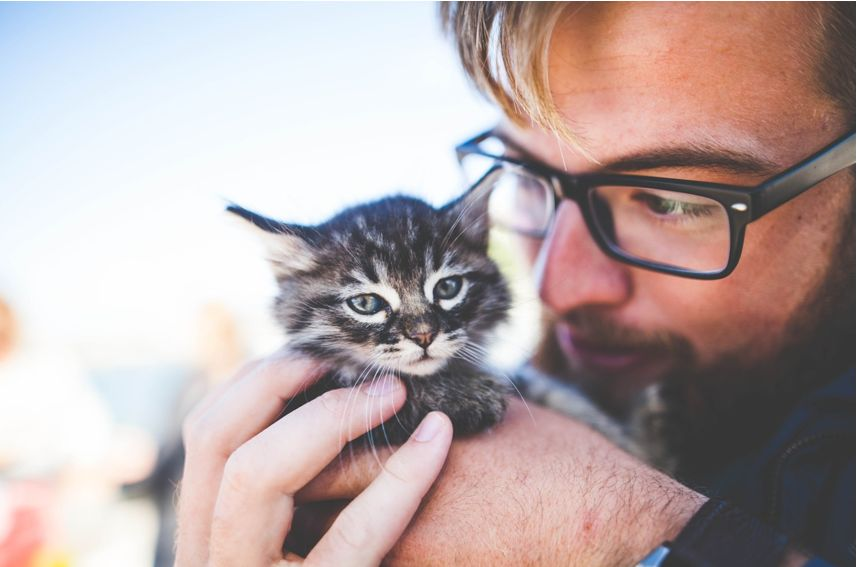
Pada dasarnya merawat kucing susah-susah gampang, terlebih jika itu kucing hias yang
membutuhkan perawatan
khusus.
Semua itu membutuhkan ketelatenan karena memang setiap kucing maupun jenisnya mempunyai karakter
yang
berbeda.
Namun yang paling penting adalah mengenai pemberian makanan dan menjaga kesehatan kucing agar tetap
berkembang
dengan baik.
Langkah ke-1: Ciptakan Lingkungan yang Nyaman
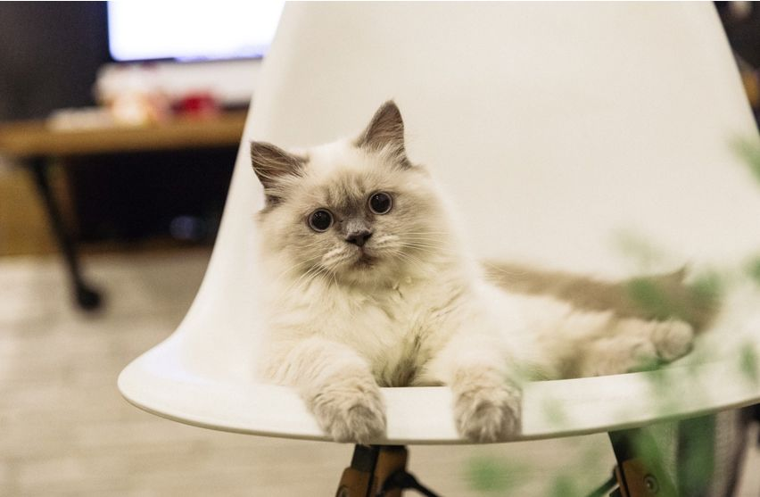
Lingkungan sangat mempengaruhi perilaku, kebiasaan, dan bahkan kesehatan kucing.
Karena itulah buatlah lingkungan yang nyaman untuk kucing. Terlebih jika kucingmu sangat gemar
bermain
serta
aktif, sehingga membutuhkan ruang yang sangat luas dan aman untuk aktifitasnya.
Ada beberapa hal yang perlu Kamu perhatikan supaya kucing tetap aman dan nyaman di
lingkungannya:
-
Singkirkan barang kesukaan kucing setelah dipakai
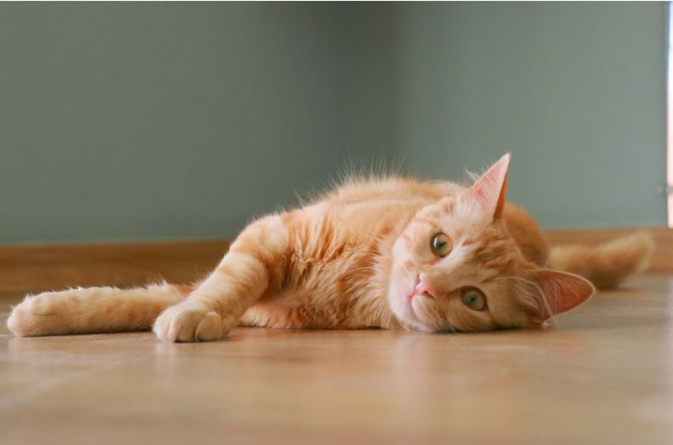
Seperti halnya tali, benang, wol, dan semacamnya yang bentuknya memanjang serta fleksibel.
Sebab kucing seringkali tertarik dengan barang semacam itu, sehingga dia akan memainkannya
dan
bahkan
menggigitnya.
Hal itu tentu sangat berbahaya jika sampai tertelan oleh si kucing.
-
Hindarkan kucing dari hal-hal yang mengandung racun
Baik itu berbentuk makanan, minuman, maupun yang lainnya. Termasuk pula benda yang mengandung
bahan
kimia
seperti
halnya pewangi, pembersih lantai, hingga sabun.
Sebab, kucing seringkali mencoba-coba menjilat dan bahkan memakan apa yang tampak seperti
makanan
jika
sudah
sangat lapar.
-
Tata dan rapikan rumahmu sedemikian rupa
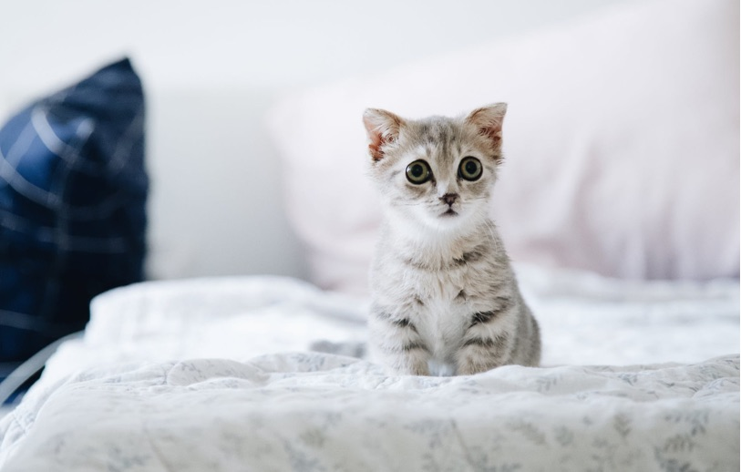
Hal itu bertujuan agar kucing mudah dalam menjalani aktifitas. Selain itu juga memudahkan
kucing
baru
untuk
beradaptasi dengan lingkungan barunya.
Misalnya saja,
Jangan membuat tempat khusus kucing pada ruangan yang terdapat permukaan tinggi, termasuk
meja,
lemari,
dan
sebagainya.
Sebab, kucing sangat suka naik turun di tempat yang tinggi.
-
Siapkan pasir atau tanah sebagai tempat buang air kucing
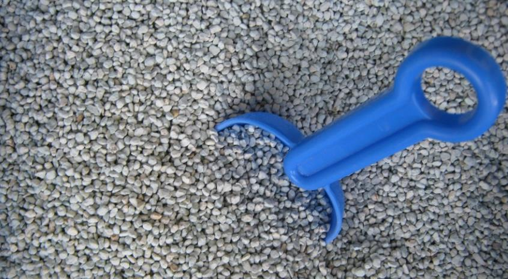
Tidak ada salahnya kamu membuatkan tempat buang air secara khusus untuk kucing berupaa pasir
atau
tanah
kering.
Sebaiknya buatkan di tempat yang sepi dan terhindar dari gangguan binatang lain, mengingat
kucing
juga
membutuhkan privasi untuk buang air.
Hal itu juga akan memudahkan Kamu membuang serta membersihkan kotoran kucing di rumah.
Langkah ke-2: Beri Makanan dan Minuman yang Cukup
Makanan serta minuman merupakan kebutuhan pokok untuk kucing.
Kucing memang terbilang hewan yang mudah menerima berbagai jenis makanan, khususnya yang berbau
ikan.
Namun,
Agar kucing Kamu bisa tumbuh serta berkembang dengan maksimal sebaiknya berikan makanan
serta
minuman
yang bernutrisi tinggi.
Kucing juga harus diberi makanan serta minuman dengan cukup agar tidak sampai kelaparan dan terus
menerus
mengeong.
Jika sudah mengeong berlebihan tentu akan mengganggu Kamu sendiri maupun orang lain.
Selain itu juga ada beberapa hal yang harus Kamu perhatikan dalam memberikan makan serta minum
kucing,
sebagaimana berikut:
-
Berikan minuman berupa air tawar
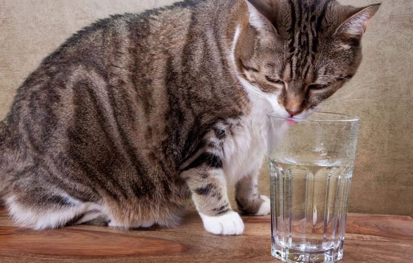
Air tawar memang lebih baik dan sehat untuk kebutuhan mineral kucing.
Dengan minum air tawar secara cukup, kucing akan tumbuh dengan baik dan maksimal.
Hal itu disebabkan air tersebut masih terbilang murni tanpa adanya bahan kimia sedikitpun.
-
Pastikan makanan yang kamu berikan tetap steril dan bernutrisi
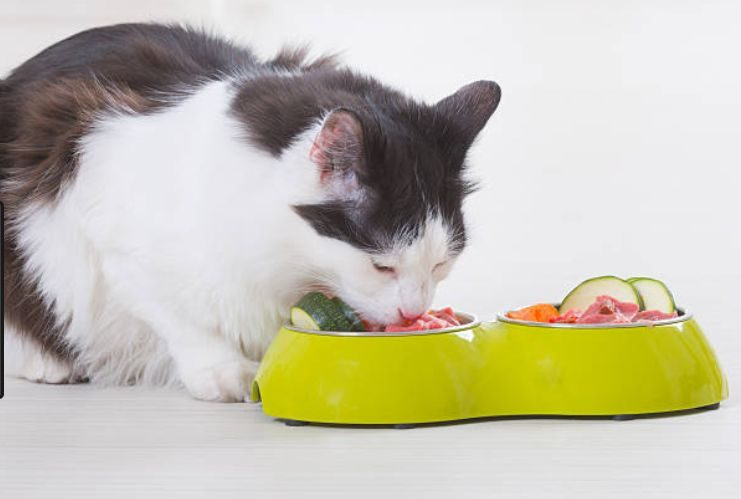
Nutrisi memang sangat penting untuk perkembangan dan kesehatan kucing.
Diantara kebutuhan nutrisi yang utama adalah karbohidrat dan protein agar kucing tetap kuat
dan
pengertian
dengan pemiliknya.
Namun, setiap jenis kucing biasanya membutuhkan kapasitas nutrisi yang berbeda-beda.
-
Latih kucing untuk mandiri dalam makan
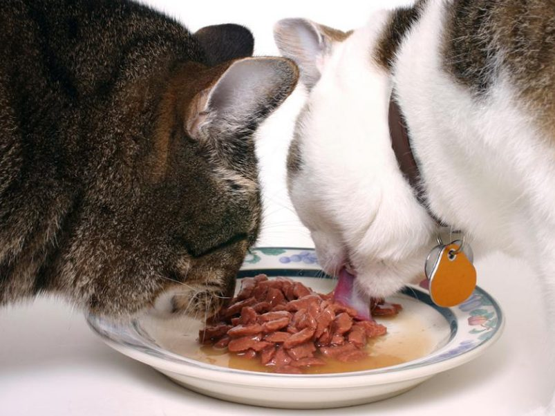
Begitu pula kemandirian sangat penting diterapkan kepada kucing, termasuk saat makan maupun
cara
mencari
makanan.
Dengan begitu, kucing tidak akan ketergantungan dengan pemeliharanya.
Jika tidak ada orang di sekitarnya, maka ia bisa mencari makan sendiri tanpa harus
mengacaukan
ruangan.
Kamu bisa menerapkan permainan teka-teki tetentu untuk menggerakkan insting berburu.
Biasanya ada alat peraga khusus untuk permainan tersebut dan Kamu bisa membelinya di toko
kebutuhan
hewan
dan
semacamnya.
Bisanya kucing hias seperti anggora dan semacamnya dianjurkan untuk diberi makanan khusus.
Kamu bisa mendapatkannya di toko khusus makanan hewan yang ada di kotamu maupun yang dijual
secara
online.
Tentu saja harus sesuai dengan kebutuhan kucing hias peliharaanmu.
Langkah ke-3: Menjaga Kesehatan Kucing
Kucing bukanlah hewan yang kebal dengan bakteri maupun penyakit. Karena itulah Kamu harus tetap
membantu
menjaga
kesehatannya agar tetap bugar baik dari luar maupun dalam.
Untuk melakukannya kamu bisa mulai dari kebersihan ruang/kandang kucing hingga pemberian
makanan.
Namun, selain itu juga masih banyak hal yang perlu Kamu lakukan, diantaranya adalah:
-
Perawatan fisik
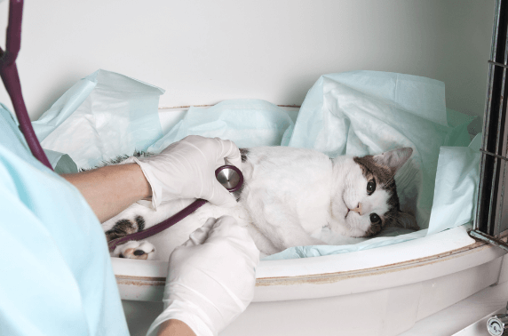
Kucing seringkali dihinggapi kutu, sehingga membutuhkan perhatian khusus untuk kebersihannya.
Tidak ada salahnya Kamu memandikan kucing sekali dalam dua hari agar kucing terhindar dari
kutu
dan
sebagainya.
Gunakan sampo khusus kucing saat memandikannya untuk mendapatkan hasil yang maksimal.
Selain itu juga segera keringkan serta sisir bulu kucing setelah dimandikan agar tetap
tampak
menggemaskan.
Jika bulu kucing terlalu panjang, Kamu bisa memotongnya secukupnya agar tampak lebih rapi.
Begitu pula potonglah kuku kucing yang panjang sekali dalam satu bulan.
Untuk itu Kamu bisa membawa kucing ke salon hewan jika memang tidak bisa melakukannya.
-
Berikan vaksin kucing
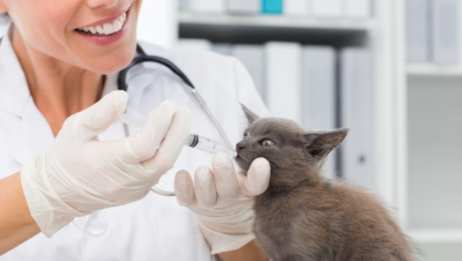
Pemberian vaksin bertujuan agar kucing tidak mudah terkena penyakit baik ringan maupun berat.
Virus maupun bakteri bisa saja masuk pada tubuh kucing dari mana saja, seperti sepatu,
lantai,
dan
lain
sebagainya.
Terlebih jika kucing Kamu sangat aktif bermain yang memungkinkan lebih banyak bakteri yang
menghinggap
padanya.
Selain itu juga berikan obat cacing kepada kucing setidaknya sekali dalam enam bulan.
Hal itu berlaku untuk kucing rumahan maupun kucing yang suka bermain di luar rumah,
mengingat
sejak
lahir
kucing
memang sudah terkena cacing-cacing dan bisa saja mewarisi penyakit yang diderita oleh
induknya.
Langkah ke-4: Buatkan Hiburan Khusus Kucing
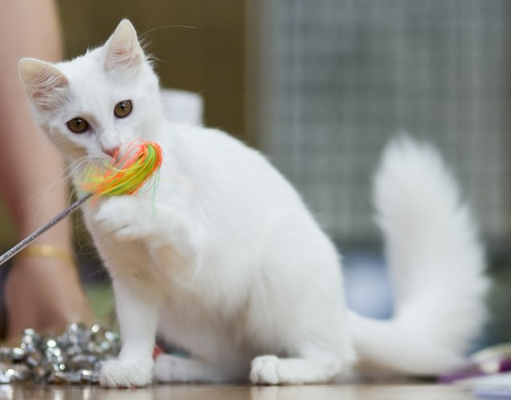
Sebagai hewan peliharaan kucing pada dasarnya mempunyai sifat khas yang setia dan sangat suka
bermain.
Karena itulah ia tidak suka dikurung di tempat yang sempit dan sepi yang menjadikannya bosan dan
bahkan
stress
lalu mengeong secara berlebihan.
Untuk mengatasinya Kamu harus menyediakan hiburan khusus kucing di suatu ruangan maupun rumahmu.
Ada beberapa hiburan khusus yang bisa menjadi penggerak mental maupun fisik kucing saat bosan.
Diantaranya
adalah:
-
Beri mainan
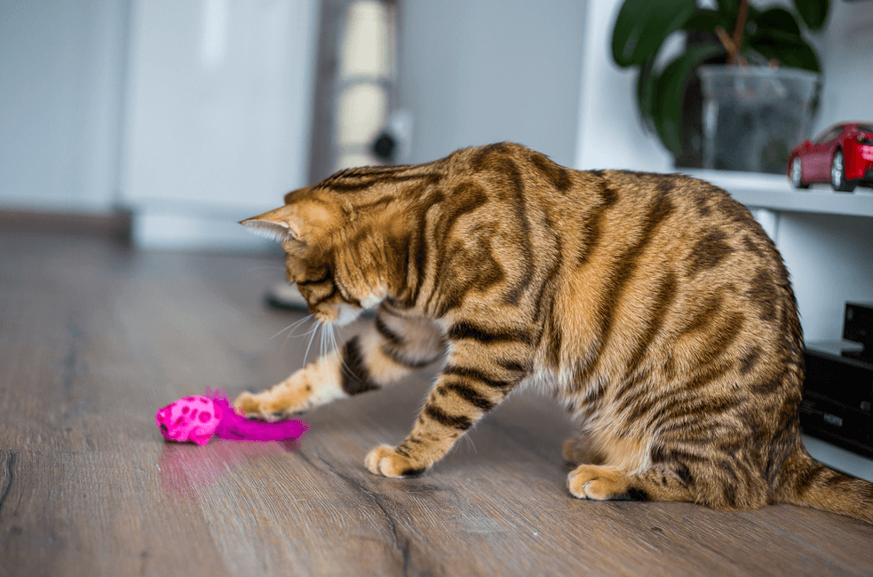
Banyak sekali mainan yang bisa Kamu berikan kepada kucing peliharaanmu seperti tikus-tikusan,
tongkat
berbulu,
dan sebagainya.
Kucing akan selalu memainkannya saat bosan di suatu ruangan.
Ia akan mencengkeram dan menjadikannya sebagai objek bergulat yang membuat kucing aktif
kembali.
-
Membiarkannya ke luar rumah dalam beberapa saat
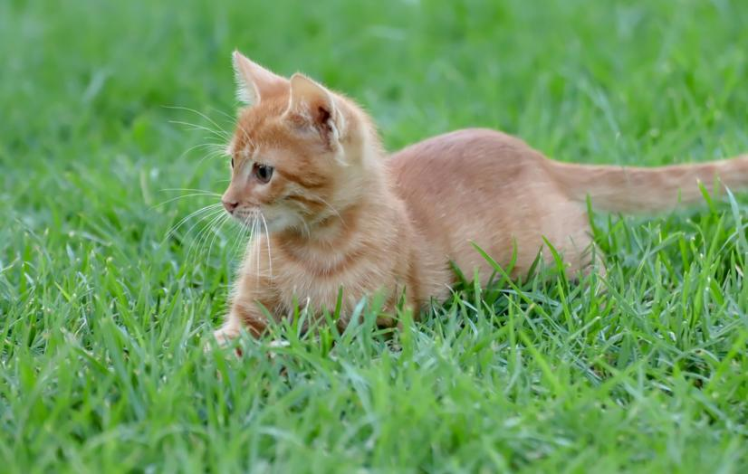
Ada kalanya kucing sangat bosan di dalam rumah karena memang dibuatkan kandang khusus di
dalam.
Karena itu, ia membutuhkan udara segar dan sekedar melihat lingkungan luar rumah.
Kamu bisa membiarkan kucing peliharaanmu bebas menyusuri pekarangan atau halaman rumah dalam
beberapa
saat.
-
Ajaklah kucing berinteraksi langsung
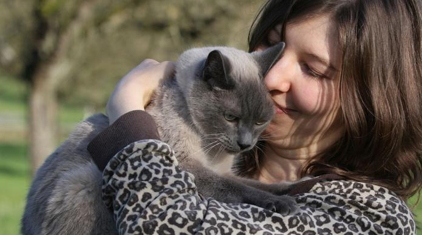
Kucing merupakan tipe hewan yang pengertian dan mudah berinteraksi dengan siapa saja,
termasuk pemiliknya.
Sering-seringlah berinteraksi langsung dengan kucing Kamu untuk menumbuhkan kepekaan dan
kesetiaan.
Dari uraian di atas, merawat kucing bukanlah pekerjaan yang berat malah menyenangkan,
terlebih
jika
memang
Kamu
termasuk pecinta kucing.
Kamu hanya harus menyiapkan lingkungan yang aman serta nyaman untuk kucing baru agar ia
mudah
beradaptasi.
Bahkan kucing bisa ditinggal kemana saja, tanpa harus khawatir akan hal buruk
Sumber Artikel: Cara Merawat
Kucing -
Kucingpedia.com